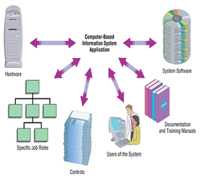

Software development is the process programmers use to build computer programs. The process, also known as the Software Development Life Cycle (SDLC), includes several phases that provide a method for building products that meet technical specifications and user requirements.
Now a days ,Software development involves professionals from various fields, not just software programmers but also individuals specialized in testing, documentation ... In most cases A method used by companies to create and maintain systems that perform basic business functions Main goal is to improve organizational systems by developing or acquiring software(software solutions) and training employees in its use Application software, or a system supports organizational functions or processes . Some of the modes are listed below as
Modes of software development
Due to the presentation of the above diagram it will help the student more and more for how to make the system to be a better.Responsive designs respond to changes in browser width by adjusting the placement of design elements to fit in the available space. If you open a responsive site on the desktop and change the browser window's size, the content will dynamically rearrange itself to fit the browser window. The site checks for the available space on mobile phones and then presents itself in the ideal arrangement.